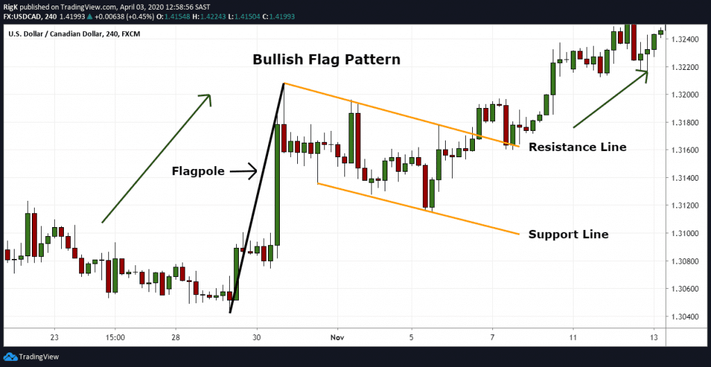

Continuation Patterns
Continuation is about pressure — not shape.

Flags Reframed
Flags work when volatility contracts while trend remains intact.
When volatility expands, continuation probability collapses.
A flag that lasts too long is usually distribution.
Best continuation trades:
- Shallow pullbacks
- Low counter-volume
- Fast resolution